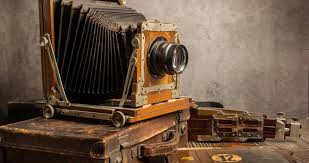
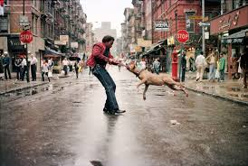
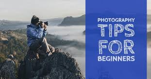

History of Photography
Photography was first invented in the early 19th century. The very first photographs were black and white and required long exposure times. Over the years, technology improved, leading to film cameras and later digital cameras. Photography has not only captured history but also shaped the way humans tell stories.
The first permanent photograph was captured in 1826 by Joseph Nicéphore Niépce using a process called heliography. This breakthrough paved the way for further developments by Louis Daguerre and William Henry Fox Talbot, who created more practical photographic processes in the 1830s.
The invention of roll film by George Eastman in the 1880s made photography accessible to amateurs, leading to the creation of the Kodak company. The 20th century saw rapid advancements with 35mm cameras, color film, and eventually the digital revolution that transformed photography into the ubiquitous medium it is today.
Modern Styles
Today, photography is a creative art form used by both professionals and hobbyists. Portrait photography focuses on people and emotions, while landscape photography captures the beauty of nature. Street photography documents daily life, and macro photography allows us to explore small details like flowers and insects.
Other popular styles include architectural photography, which highlights the design and structure of buildings; wildlife photography, which requires patience and skill to capture animals in their natural habitats; and documentary photography, which tells stories about real-life situations and events.
Each style offers a different way of looking at the world, making photography a versatile and exciting field. With the advent of new technologies like drone photography and computational photography, the possibilities continue to expand, offering fresh perspectives and creative opportunities for photographers of all levels.
Tips for Beginners
If you are new to photography, start simple. Use natural light whenever possible and avoid using flash indoors. Learn the rule of thirds to improve composition, and keep your hands steady or use a tripod to avoid blurry photos.
Most importantly, practice often. Take pictures every day, experiment with angles and lighting, and review your results to see how you can improve. The best way to learn photography is by doing it!
Master Composition
Learn about leading lines, framing, and the rule of thirds to create visually appealing images.
Understand Lighting
Golden hour (just after sunrise or before sunset) provides the most flattering natural light.
Experiment with Settings
Try shooting in manual mode to understand how aperture, shutter speed, and ISO work together.
Photo Gallery
Explore these examples of different photography styles:
Portrait
Landscape
Macro
Street

Wildlife
Architecture